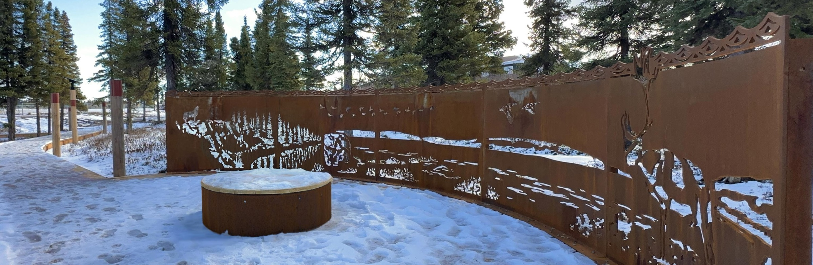
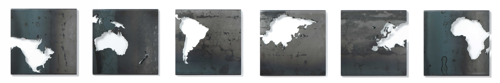

Nouveau site en préparation
En ligne prochainement
James Kennedy
Œuvres en acier qui façonnent le territoire et la mémoire

Projets
Art public, installations et œuvres sur commande, développés en relation avec le site, l'échelle et le matériau.

Œuvres
Tableaux d'acier, sculptures, encres sur papier et photographie, présentés par séries.